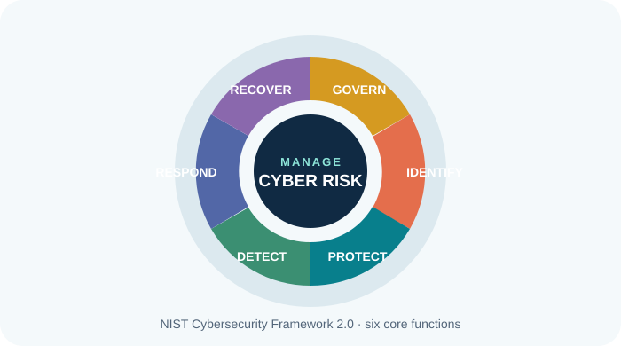
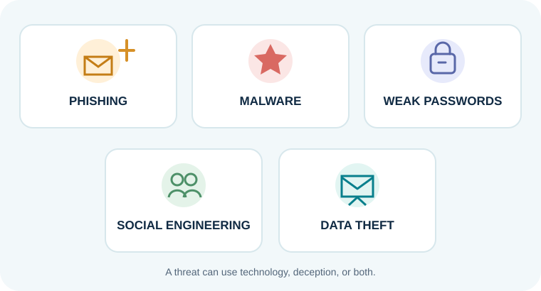

What does cybersecurity mean?
Cybersecurity is the collection of safeguards used to protect digital information and the systems that store, move and use it. Its goal is not merely to stop every attack. It is to understand risk, reduce likely harm, notice problems, respond and recover. NIST's Cybersecurity Framework 2.0 organises this work into six functions: Govern, Identify, Protect, Detect, Respond and Recover (NIST, 2024).


Common features
- Identity and access: check who someone is, then give only the access their role needs.
- Data protection: use encryption, safe storage and backups to protect information.
- Network and device security: use settings and tools such as firewalls, endpoint protection and secure Wi-Fi.
- Monitoring and response: watch for unusual activity and follow an incident plan.
- People and governance: set clear rules, train staff and assign responsibility.
Advantages and limitations
| Area | Advantage | Challenge or limitation |
|---|---|---|
| Information | Reduces the chance that private records are exposed or changed without permission. | No single tool can guarantee that data will never be lost or stolen. |
| Work continuity | Backups and response plans help an organisation restore services after disruption. | Plans cost time and money, and need practice and updates. |
| People | Training helps staff notice scams and report problems early. | Attackers change their methods; one training session is not enough. |
| Technology | Access controls and updates reduce known weaknesses. | Security tools need skilled staff, proper setup and ongoing maintenance. |
How teams use it at work
A company may give each employee a separate account, require MFA, install updates, back up important records, and teach workers how to report a suspicious message. A security team then monitors systems and practises how to respond. These measures work best as layers: if one safeguard misses a problem, another may still limit the damage.
Quick knowledge check
Imagine a coworker gets an unexpected email asking them to sign in immediately. What is the safest first step?
- Click the link quickly so the account is not locked.
- Pause, check through a trusted channel, and report the message using workplace instructions.
- Forward it to everyone to ask if it is real.
Learning-interest form
Share a topic you would like to learn next.